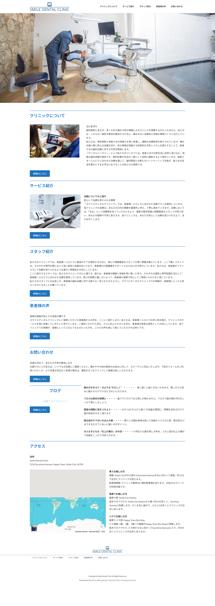

歯科医院のHPになります。
URL
https://takenaka.smml.info/smile-dental-clinic/
担当
WordPress(おすすめの無料テーマで作成)
サイトの目的
・ブランド認知の強化_クリニックのブランドをオンラインで確立
・患者獲得の拡大_検索エンジンでの可視性を高め、新規患者獲得
・情報アクセスの向上_サービスやスタッフ、施設の情報への容易なアクセス
・教育とコミュニケーション_歯科治療に関する啓蒙活動とブログ提供
使用技術
WordPress/Photoshop
デザインについて
お問い合わせを増やすことが目的のため、ついついお問い合わせをしたくなるようなストーリー性をもたせたデザインにいたしました。